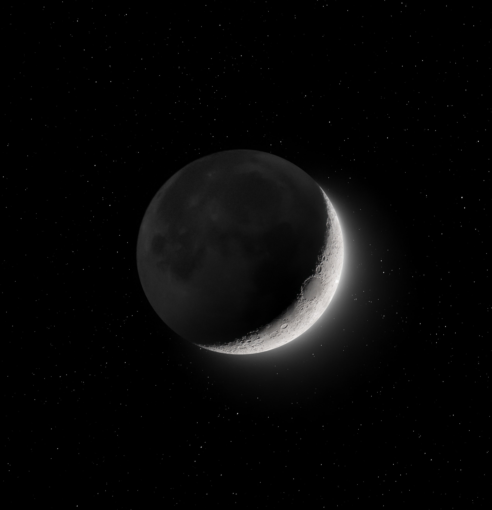

Nebula

A nebula is a giant cloud of dust and gas in space. Some nebulae (more than one nebula)
come from the gas and dust thrown out by the explosion of a dying star, such as a supernova.
Other nebulae are regions where new stars are beginning to form. For this reason, some
nebulae are called "star nurseries."
Moon
The Moon’s desolate beauty has been a source of fascination and curiosity throughout history
and has inspired a rich cultural and symbolic tradition. In past civilizations the Moon
was regarded as a deity, its dominion dramatically manifested in its rhythmic control over
the tides and the cycle of female fertility. Ancient lore and legend tell of the power of
the Moon to instill spells with magic, to transform humans into beasts, and to send people’s
behaviour swaying perilously between sanity and lunacy

A glance of Stars in Galaxy
Galaxies are vast cosmic islands of stars, gas, dust, and dark matter held together by gravity.
Hubble’s keen eye has revealed intricate details of the shapes, structures, and histories of galaxies —
whether alone, as part of small groups, or within immense clusters. From supermassive black holes at
galactic centers to giant bursts of star formation to titanic collisions between galaxies, these
discoveries allow astronomers to probe the current properties of galaxies as well as examine how
they formed and developed over time.